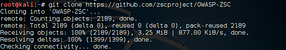
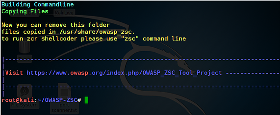

The information provided in this site is for educational purposes regarding pentesting. The author of the site will not be held any responsibility for any misuse of the information from this site.
Introduction
Every day thousands of malware are released online malware wants to stay hidden during infection and operation to prevent removal and analysis, this Malware achieves this using many techniques to bypass detection one of the method is obfuscation this method can be used to cover filename/signature, changing the malware attributes or other methods, it can also be defined as a practice of making something difficult to understand.
Lets Start!
An attacker will typically employ file-less Malware like Shellcode(a piece of binary data that is meant to be executed by a process) to avoid detection but modern Anti-virus engines are much smarter at detecting potential threats, they also respond much quicker. As soon as your code behavior is something too malicious-looking its either blocked or tossed out from your system.
Let’s see an examples of practical obfuscation used in various malware today.
Generating a Payload
Shellcode can be generated from the various frameworks.
Step1:- Run Kali Linux os and download OWASP-ZSC, OWASP-ZSC is not built-in Kali Linux so it needs to be downloaded externally from github.com
root@kali:~# git clone https://github.com/zscproject/OWASP-ZSC
Step 2:-Move the terminal to the OWASP-ZSC folder
root@kali: > cd OWASP-ZSC
Step3:- Now run the following command in the terminal
root@kali:# ./installer.py

Step4:-The below command allows running the tool easily by typing zsc on the terminal
root@kali:#zsc
Step5:--Now, let’s generate some shellcode.
zsc> shellcode
zsc/shellcode> generate
OWASP-ZSC uses the TAB key to show options for any command, so now we use the TAB to show the shellcode options.
As you can see below, OWASP_ZSC has three OS shellcode options, linux_x86, osx_x86 and windows_x86 Since most of us use windows operating system
zsc/shellcode/generate>windows_x86
Step6:-Now to generate shellcode for windows_x86 so we press tab and select shellcode from the option
zsc/shellcode/generate>windows_x86>add_admin
Step7:-you can also search for various shellcode from the www.shell-storm.org and shell-storm.org to increase the shellcode spectrum
zsc/shellcode/generate/windows_x86/add_admin> username&&password
enter username and password
Step8:-Now select the type of method you want to chose to encode with random XOR (xor_random). The random encodes produce shellcode that is different each time making it more likely to be undetected by AV
zsc/shellcode/generate/windows_x86/add_admin/encode_type> xor_random
Step9:-OWASP-ZSC prompts whether you want to output the assembly code and whether I want to output my shellcode to the screen.
Step10:-The process of obfuscation is an attempt to hide the real purpose of the code and making it hard to read or reverse engineer the file-less malware. (obfuscation)
next, we start the obfuscation process
zsc > obfuscate
javascript, Perl, PHP, python, ruby are the available options
Step11:- Now to generate an encoded shellcode we select the type of encoding from the options
zsc/shellcode/generate/windows_x86/add_admin/encode_type> xor_random
below you can see the Assembly code generated after the xor_random obfuscation
Step12:-its time to test our shellcode whether it is detected by any antivirus to test the shellcode you can visit www.virustotal.com and upload the shellcode and scan